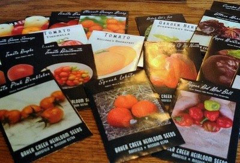

A G R I C U L T U R E
Hybrid Seeds

“Hybrid seeds are The seeds obtained by artificial pollination (cross pollination) are called hybrid seeds.
Hybrid plants are derived either from hybrid seed (e.g., maize) or from vegetative cuttings (e.g., apples). Many fruit and vegetable plants are vegetatively propagated hybrids, that is, vegetative clones of a hybrid plant, with particularly desirable traits, derived from a sexual cross of two parental plants (e.g., apples, strawberries, holly, and cassava); propagation may be by cuttings, or bulbs. Some vegetable and field crop plants are hybrid plants, derived from F1 hybrid seed, and valued because of enhanced yield of seed (e.g., corn), vegetation (e.g., kale, carrot, and onion), or fruit (e.g., tomatoes).
Hybrid seed production systems consist of two components, inbred lines and a hybridization system. Inbred lines are homozygous, and, therefore, pure-breeding plants which can be maintained by selfing, unless you are using a male sterile or self-incompatibility system. This facilitates perpetual reproduction of the hybrid and consistency of phenotype and performance, as well as a method of proprietary control of the germplasm.
F1 Hybrids in Plants
In crop plants, the term “F1 hybrid” is usually reserved for agricultural cultivars derived from two different parent cultivars, each of which are inbred for a number of generations to the extent that they are almost homozygous. Crossing two genetically different plants produces a hybrid seed (plant) by means of controlled pollination. To produce consistent F1 hybrids, the original cross must be repeated for each season. The divergence between the parent lines promotes improved growth and yield characteristics, while the homozygosity of the parent lines ensures a phenotypically uniform F1 generation.
Plant Development and Evolution
Endosperm abortion is a common cause of hybrid seed failure upon certain interspecific or interploidy crosses (Schatlowski & Köhler, 2012). Studies on the underlying molecular mechanisms were long disconnected from imprinting. However, a decade ago, the observation that such hybridization failures were linked with parental genome dosage (Dilkes & Comai, 2004) and the emerging view that genomic imprinting widely affected the dosage of parental products converged. Key to the emergence of this concept was the identification of the jason (jas) mutant in A. thaliana, which leads to the formation of unreduced pollen, thus changing the dosage of the paternal genome, including that of the imprinted PEG PHE1.